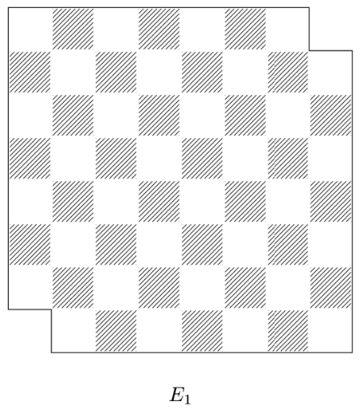
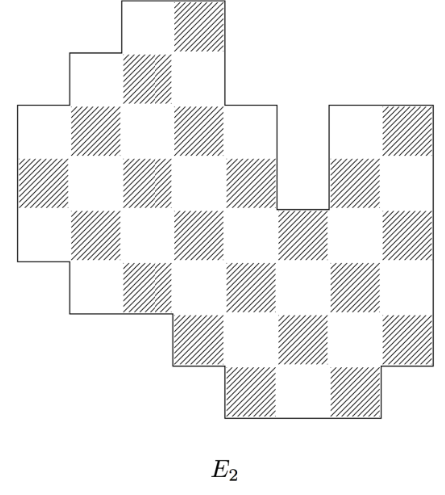
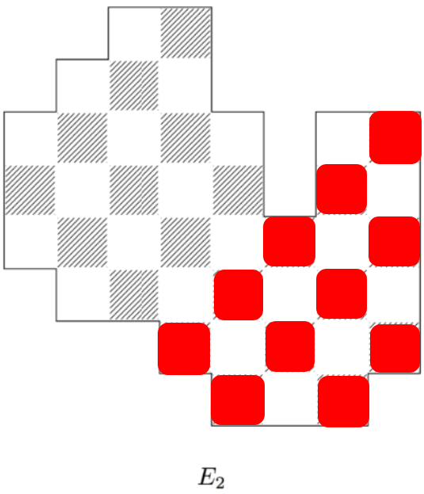

Dans cette séance, nous allons voir comment maximiser le nombre de couples de deux éléments de populations différentes.
Une entreprise souhaite lancer un projet logiciel avec une division des tâches bien précise. Dans l'équipe, on cherche:
Cinq employés sont disponibles, et ils n'ont pas tous les mêmes compétences...
Soit $G = (V,E)$ un graphe.
Un couplage $M \subseteq E$ de $G$ est un ensemble d'arêtes de $G$ tel que n'importe quel sommet de $G$ est contenu dans au plus une arête de $M$. En d'autres termes, un couplage $M$ est un ensemble de couples exclusifs de sommets de $G$.
On définit trois termes:
Théorème de Hall (dit des Mariages): Soit un graphe biparti $B = (U,V,E)$.
Le graphe $B$ admet un couplage parfait $M$ si et seulement si:
Notre projet est incomplet, et on est incapable de rajouter quelqu'un...
Est-il de taille maximum ? Comment trouver mieux, ou comment prouver qu'on ne peut pas trouver mieux ?
Pour un couplage $M$, on dit qu'un sommet est $M$-saturé s'il fait partie d'un couple dans $M$. Sinon il est $M$-insaturé.
On définit une chaîne augmentante pour un couplage $M$ comme une chaîne de $G$ dont:
Lemme de Berge (1957): Un couplage $M$ d'un graphe $G$ est de taille maximum si et seulement si $M$ n'admet pas de chaîne augmentante.
Regardons ce qu'il se passe si on prend chaque arête de la chaîne augmentante et qu'on inverse son appartenance à $M$:
Bonne nouvelle : trouver un couplage maximal, c'est très facile (on ajoute des arêtes arbitrairement jusqu'à ce que ça bloque).
Très bonne nouvelle : il existe un algorithme efficace pour trouver un couplage maximum.
Mauvaise nouvelle : trouver un couplage maximum en général, c'est pas une technique triviale (Algorithme des fleurs d'Edmonds).
Bonne(?) nouvelle : Si on se limite aux graphes bipartis, l'algorithme est pas très compliqué.
Une chaîne augmentante pour un couplage d'un graphe biparti $B = (U,V,E)$, possède une extrémité ($M$-insaturée) dans $U$ et une extrémité (aussi $M$-insaturée) dans $V$.
La première arête d'une chaîne augmentante n'est pas dans $M$. Si on commence dans $U$, alors la première arête d'une chaîne augmentante, absente de $M$, va de $U$ vers $V$. La seconde, dans $M$, va de $V$ vers $U$.
On voit un pattern: les arêtes dans $M$ vont de $V$ vers $U$, les autres de $U$ vers $V$.
Alors, la recherche d'une chaîne augmentante revient à trouver un $s-t$ chemin dans ce graphe auxiliaire:
Une fois la chaîne augmentante trouvée, on inverse l'appartenance des arêtes correspondantes dans $M$.
Entrée: Un graphe biparti $B = (U,V,E)$.
Sortie: Un couplage maximum $M$ de $B$.
Complexité: Construire le graphe auxilliaire coûte $O(V + E)$. Trouver un chemin coûte aussi $O(V + E)$. Un couplage maximum contient au plus $\frac{V}{2}$ arêtes donc la complexité totale est de $O(V^2 + VE) = O(V^3)$.
Soit $B = (U,V,E)$ un graphe biparti $k$-régulier (chaque sommet a degré $k$).
Vérifions les deux conditions du théorème de Hall. Soit un ensemble de sommets $X \subseteq U$. On pose $N(X)$ l'ensemble des sommets voisins de $X$.
$$k|X| = \displaystyle \sum_{u \in X} d(u) = |E(G[X \cup N(X)])| \leq \sum_{v \in V} d(v) = k |N(X)|$$
Donc la condition 2 du théorème est validée, et à fortiori par $U$ (avec $|U| \leq |V|$), donc $|V| \leq |U|$ par le même raisonnement et on a la condition 1 : $|U| = |V|$.
On prouve cela par récurrence sur $k$. Le cas $k = 1$ a déjà été résolu à la question précédente.
Supposons la propriété vraie pour $k-1$, soit $B = (U,V,E)$ un graphe biparti $k$-régulier.
Alors il existe un couplage parfait $M$. $B' = B - M$ est un graphe biparti $(k-1)$-régulier.
Alors on peut décomposer $B'$ en $k-1$ couplages parfaits deux-à-deux arêtes disjoints, et $B$ peut être décomposé en $k$ couplages parfaits.
Cinq oeuvres 1, 2, 3, 4, 5 de cinq cinéastes célèbres A, B, C, D, E ont été primées à un célèbre festival.
Voici le schéma de la participation des cinéastes à la réalisation de chaque film : $A = \{3, 4, 5\},~B = \{3, 4, 5\},~C = \{3, 4, 5\},~D = \{2\},~E = \{1\}.$
Chacun des 5 cinéastes peut remettre une fois le prix à l'équipe d'un film-lauréat à condition qu'il ne soit pas l'un des réalisateurs. Est-il possible de réaliser ainsi la remise de prix ?
Le groupe des trois cinéastes $A,B,C$ ne sont éligibles à primer que deux films ! Donc il n'est pas possible de trouver un couplage parfait.
| Avion | Routes |
|---|---|
| $A_1$ | Londres-Francfort |
| $A_2$ | Londres-Francfort, Milan-Barcelone |
| $A_3$ | Londres-Francfort, Paris-Moscou, Athènes-Madrid, Rome-Sofia |
| $A_4$ | Paris-Moscou, Athènes-Madrid, Rome-Sofia |
| $A_5$ | Londres-Francfort, Milan-Barcelone |
Modéliser par un graphe biparti.
L'avion $A_3$ dessert Londres-Francfort, $A_4$ la route Rome-Sofia et $A_5$ est sur la route Milan-Barcelone.
Cette affectation est-elle un couplage maximum ?
L'avion $A_3$ doit être retiré du service pour passer en maintenance.
Trouver un couplage maximum du graphe ainsi modifié.
Voici deux échéquiers auxquels on a enlevé des cases. Existe-il une manière de paver ces échéquiers avec des dominos de taille 1x2 ?


Modéliser cette situation comme un problème de couplage parfait, et utilisez le théorème de Hall pour argumenter vos résultats.
Pour $E_1$, on observe que la première condition du théorème de Hall n'est pas validée: il n'y a pas assez de cases noires.
Pour $E_2$, il faut regarder un ensemble pertinent. Les cases rouges ci-dessous sont au nombre de 11, mais elles sont voisines à seulement 10 cases blanches. La deuxième condition du théorème de Hall n'est donc pas remplie.

Trouver une chaine augmentante pour le couplage donné dans ce graphe. Est-ce que l'algorithme présenté précédemment fonctionne toujours ? Pourquoi ?